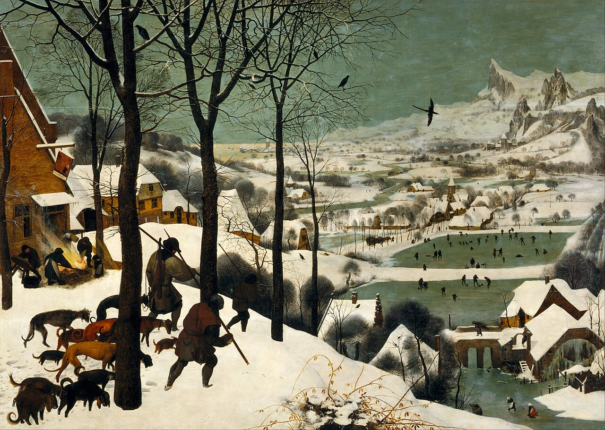
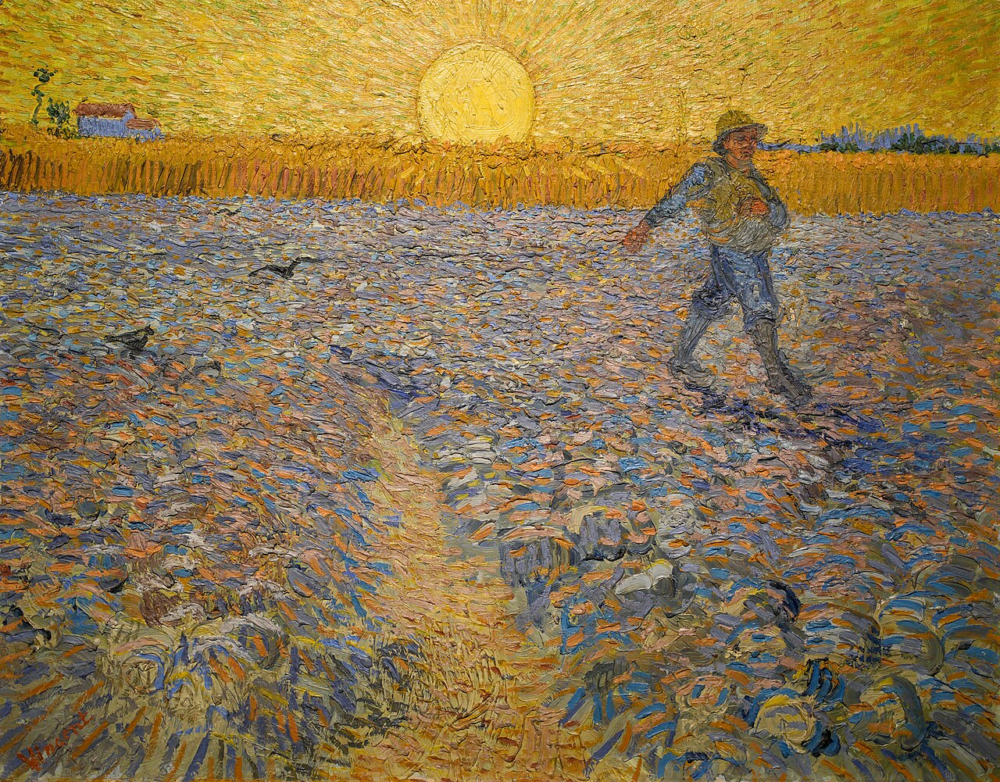

Executive Summary
우리가 매일 쓰는 AI 도구는 대부분 사냥에 가깝습니다. 주제를 넣으면 글 한 편이 나오고, 프롬프트 한 번에 그림 한 장이 나옵니다. 솜씨와 그날의 운에 기대 한 마리를 잡아 오는 일입니다. 산출물은 쌓이는데 역량은 쌓이지 않는 답답함, 멈추면 곳간이 다시 비는 허전함은 여기서 옵니다.
이 글은 그 답답함을 사냥과 경작이라는 오래된 대비로 풀어 봅니다. 페블러스가 말하는 데이터 그린하우스는 경작입니다. 씨를 뿌리면 해와 비와 시간이 대신 키우고, 땅(데이터와 콘텐츠)은 가꿀수록 비옥해집니다. 도구와 환경을 가르는 경계는 자율성 하나가 아닙니다. 실행 주체, 시간성, 신뢰, 상태라는 네 축으로 나뉩니다. 자율적이기만 한 에이전트도 여전히 사냥일 수 있습니다.
결론을 미리 적자면, 도구는 행위를 빌려주고 그린하우스는 대상을 키웁니다. 사냥은 자연에서 빼앗고 경작은 자연과 함께 기릅니다. 어느 쪽이 우월하다는 이야기가 아닙니다. 당신의 조직이 지금 어느 쪽에 서 있는지를 묻는 이야기입니다.
사냥꾼의 곳간은 왜 늘 비는가
사냥은 한 번의 행위로 한 번의 산출물을 잡아 오는 일입니다. 활을 당겨 한 마리를 맞히고, 그 한 마리를 곳간에 넣습니다. 잘 잡으면 풍족하지만 다음 끼니는 다시 처음부터입니다. 솜씨가 좋아도 그날의 바람과 짐승의 발자국에 매번 기댑니다. 사냥꾼이 활을 내려놓는 순간, 곳간은 비기 시작합니다.

AI 작성기에 주제를 넣어 글 한 편을 받는 경험이 정확히 이것입니다. 프롬프트가 활이고, 결과물이 잡아 온 한 마리입니다. 이번엔 잘 나왔고 다음엔 어딘가 어색합니다. 같은 프롬프트도 어제와 오늘이 다릅니다. 좋은 결과를 얻으려면 매번 솜씨를 다시 발휘해야 하고, 손을 떼면 아무것도 자라지 않습니다.
그래서 많은 실무자가 비슷한 허전함을 말합니다. 산출물 폴더는 빠르게 채워지는데, 정작 조직의 역량은 그만큼 쌓이지 않는다는 느낌입니다. 글은 100편이 모였지만 101편째도 여전히 맨손으로 시작합니다. 어제 잡은 사슴이 오늘의 사냥을 도와주지 않듯, 어제 뽑은 결과물이 오늘의 작업을 쉽게 만들어 주지 않습니다. 곳간에 고기는 있어도 들판은 그대로입니다.
사냥의 본질은 산출물이 남고 과정은 사라진다는 데 있습니다. 무엇을 어떻게 잡았는지는 사냥꾼의 머릿속에만 있고, 곳간에는 결과만 쌓입니다. 다음 사냥이 이전 사냥보다 나아질 구조적 이유가 없습니다.
농부는 무엇을 다르게 하는가
농부는 빼앗지 않고 기릅니다. 씨를 뿌리는 행위 자체는 작지만, 그다음은 해와 비와 시간이 대신합니다. 사냥꾼이 한 마리를 위해 온종일 들판을 헤맬 때, 농부는 한 번 뿌린 씨가 자라는 동안 다른 밭을 돌봅니다. 결정적으로 땅은 가꿀수록 비옥해집니다. 한 해의 수확이 이듬해의 토양을 더 좋게 만들고, 한 번 길을 낸 물길이 다음 농사를 수월하게 합니다.

온실은 경작에서 한 발 더 나아간 형태입니다. 바깥 날씨에 수확을 맡기는 대신, 통제된 환경 안에서 빛과 온도와 물을 조절해 사철 내내 길러냅니다. 겨울에도 작물이 자라고, 흉년의 변덕에 곳간이 통째로 비는 일이 줄어듭니다. 자연을 거스르는 것이 아니라, 자연이 일하기 좋은 조건을 사람이 설계해 두는 것입니다.
살아 있는 무언가를 정원처럼 돌본다는 발상은 사실 새롭지 않습니다. 소프트웨어를 다루는 사람들 사이에서도 좋은 시스템은 건물처럼 한 번에 지어 올리는 것이 아니라 정원처럼 끊임없이 가꾸며 키우는 것이라는 오래된 이야기가 있었습니다. 한 번 세우면 끝나는 구조물과 달리, 살아 있는 것은 돌보는 손길에 따라 더 좋아지기도 하고 방치하면 거칠어지기도 합니다. 데이터와 콘텐츠도 다르지 않습니다.
페블러스가 그린하우스(Greenhouse, 온실)라는 말을 쓰는 이유가 여기에 있습니다. 데이터와 콘텐츠를 한 번 잡아 오는 사냥감이 아니라, 조건을 갖추면 스스로 자라고 가꿀수록 비옥해지는 작물로 다루겠다는 선언입니다. 자랑을 위한 브랜드명이 아니라, AI를 대하는 태도를 가리키는 은유입니다. 사냥은 자연에서 빼앗고, 경작은 자연과 함께 기릅니다.
경작과 사냥의 차이는 부지런함의 차이가 아닙니다. 산출물을 잡아 오느냐, 산출물이 자라는 땅 자체를 키우느냐의 차이입니다. 그리고 이 차이는 네 가지 축으로 더 정확하게 나눌 수 있습니다.
누가 일하고, 언제 나아지는가 — 실행 주체와 시간성
업계의 흔한 설명은 도구와 에이전트의 차이를 자율성 하나로 환원합니다. 규칙대로 실행하면 도구이고, 스스로 목표를 향해 추론하면 에이전트라는 식입니다. 틀린 말은 아니지만 충분하지 않습니다. 자율성은 네 축 가운데 하나일 뿐이고, 나머지 셋을 보지 않으면 자율적이기만 한 사냥을 환경으로 착각하게 됩니다.
3.1실행 주체 — 조작자에서 정원사로
도구는 사람이 직접 쥐고 씁니다. 손이 멈추면 일도 멈춥니다. 환경은 다릅니다. 에이전트가 자율로 일하고, 사람은 작업마다 손을 대는 대신 중요한 길목(게이트)에서 감독합니다. 역할이 조작자에서 정원사로 바뀝니다. 정원사는 잎을 일일이 잡아당겨 키우지 않습니다. 물길을 내고, 솎아 줄 곳을 정하고, 수확할 때를 판단합니다. 사람의 일이 사라지는 것이 아니라, 매 순간의 실행에서 결정적 판단의 자리로 옮겨 갑니다.
3.2시간성 — 한 번 쓰고 끝인가, 다음 사이클을 좋게 하는가
도구는 한 번 쓰고 끝납니다(episodic). 이번 작업과 다음 작업 사이에 다리가 없습니다. 환경은 진단과 개선이 다음 사이클을 더 좋게 만드는 지속 루프로 돕니다. 이번에 발견한 약점이 다음 작업의 기본값이 되고, 한 번 가꾼 땅이 다음 수확을 수월하게 합니다. 사냥과 경작을 가르는 가장 깊은 선이 바로 이 시간의 방향입니다.
여기서 한 가지 반전이 필요합니다. 자율적인 에이전트라고 해서 자동으로 경작이 되는 것은 아닙니다. 개발자 마르코 솜마는 오늘의 에이전트를 두고 이렇게 적었습니다. "지금의 에이전트 시스템은 앞으로 학습할 뿐, 자신이 딛고 선 바탕을 다시 빚지는 못한다. 기억력이 좋아진 사냥일 뿐, 농사가 아니다." 더 똑똑하게 한 마리를 잡아 오는 일과, 들판 자체를 기름지게 만드는 일은 다릅니다. 시간의 방향이 다음 사이클로 향하지 않는다면, 아무리 자율적이어도 그것은 여전히 사냥입니다.
믿을 수 있는가, 이어 갈 수 있는가 — 신뢰와 상태
실행 주체와 시간성이 일하는 방식의 차이라면, 신뢰와 상태는 그 결과를 믿고 이어 갈 수 있느냐의 차이입니다. 이 두 축이 빠지면 자율적이고 지속적인 시스템조차 매번 처음으로 되돌아갑니다.
4.1신뢰 — 출력만 남는가, 증적이 함께 자라는가
도구는 출력만 남깁니다. 잡아 온 한 마리는 있는데, 언제 누가 어떤 판단으로 잡았는지는 사냥꾼의 기억에만 있습니다. 그래서 결과물을 받을 때마다 처음부터 다시 검수해야 합니다. 환경은 증적(provenance, 무엇이 언제 누구의 손을 거쳤는지에 대한 기록)이 결과물 옆에서 함께 자라게 합니다. 누가 어느 단계에서 무엇을 했고 어떤 검증을 통과했는지가 작물의 나이테처럼 쌓입니다.
증적은 한 번 서명하고 끝나는 도장이 아닙니다. 콘텐츠 신뢰 표준인 C2PA나 데이터 품질 표준 ISO/IEC 5259가 말하는 것도 같습니다. 단계마다 다시 기록되고, 원료와 가공의 관계가 그래프처럼 누적됩니다. 매번 전부 다시 검수하지 않아도 되는 이유는, 신뢰가 결과물 옆에서 같이 자라 있기 때문입니다. 사냥꾼의 곳간에는 고기만 있지만, 농부의 땅에는 그 작물이 어떻게 자랐는지가 함께 남습니다.

4.2상태 — 무상태인가, 살아 있는가
대형 언어 모델은 기본적으로 무상태(stateless)입니다. 한 번의 호출이 끝나면 그 맥락은 사라지고, 다음 호출은 다시 빈손으로 시작합니다. 기억은 저절로 생기지 않고 바깥 저장소로 설계해 넣어야 비로소 생깁니다. 도구가 매번 처음부터인 이유가 여기에 있습니다.
환경은 작업(run)이 영속되고 복구되는 살아 있는 시스템입니다. 중간에 멈추거나 시스템이 꺼져도, 기록(journal)과 체크포인트를 따라 하던 일을 이어 갑니다. 길게 자라는 작물이 한밤의 추위에 통째로 죽지 않고 다음 날 다시 자라듯, 긴 작업이 한 번의 중단으로 백지가 되지 않습니다. 뿌리를 내린 작물과, 따자마자 시드는 한 송이의 차이입니다.
네 축을 한자리에 모으면, 같은 작업도 사냥으로 다룰 때와 경작으로 다룰 때가 이렇게 갈립니다.
| 축 | 사냥 (AI 도구) | 경작 (데이터 그린하우스) |
|---|---|---|
| 실행 주체 | 사람이 직접 쥐고 쓴다. 손이 멈추면 일도 멈춘다. | 에이전트가 자율로 일하고, 사람은 게이트에서 감독한다. 조작자에서 정원사로. |
| 시간성 | 한 번 쓰고 끝. 작업 사이에 다리가 없다. | 진단과 개선이 다음 사이클을 좋게 하는 지속 루프. |
| 신뢰 | 출력만 남는다. 매번 처음부터 다시 검수한다. | 증적(provenance)이 결과물 옆에서 함께 자란다. |
| 상태 | 무상태. 호출이 끝나면 맥락이 사라진다. | 작업이 영속·복구되는 살아 있는 시스템. |
콘텐츠 그린하우스 — 글 한 편을 잡는 일과 기르는 일
추상을 한 번 땅에 내려놓겠습니다. 가장 익숙한 예가 글쓰기입니다. 한쪽에는 주제를 넣으면 글 한 편을 뱉는 AI 작성기가 있습니다. 편리하고 빠릅니다. 그러나 그것이 하는 일은 한 마리를 잡아 오는 사냥입니다. 글은 나왔지만 어떻게 나왔는지는 남지 않고, 다음 글은 다시 맨손에서 시작하며, 발행 뒤 사실 하나가 틀렸다는 걸 알아도 그 글만 따로 손봐야 합니다.
다른 쪽에는 콘텐츠 그린하우스가 있습니다. 자율 생산과 발간 승인 게이트, 증적, 발간 전후의 수정이 따로 노는 기능이 아니라 한 몸으로 돕니다. 에이전트가 초안을 기르고, 사람은 발간이라는 길목에서 감독하며, 무엇이 어느 단계를 어떻게 통과했는지가 글과 함께 기록됩니다. 발행 뒤에도 작업은 끝나지 않아서, 고쳐야 할 곳은 같은 흐름 안에서 다시 자라납니다. 글 한 편을 잡는 일이 아니라, 글이 자라는 밭을 기르는 일입니다.

페블러스가 그리는 세 개의 그린하우스(콘텐츠, 데이터, 에이전트)는 서로 다른 작물이 아니라 같은 운영 철학으로 가꾸는 세 개의 밭입니다. 콘텐츠도, 데이터도, 그 위에서 일하는 에이전트도 한 번 잡아 오는 사냥감이 아니라 조건을 갖춰 기르는 작물로 다룹니다. 실제로 이 글을 비롯한 페블러스 블로그가 그런 흐름 위에서 자랍니다. 같은 은유를 데이터 수집과 합성의 관점에서 다룬 자매 글 피지컬 AI를 위한 데이터, 사냥할 것인가 재배할 것인가도 같은 땅에서 나온 이야기입니다.
콘텐츠 그린하우스가 AI 작성기보다 나은 점은 더 빨리 글을 뽑는다는 데 있지 않습니다. 글이 나온 과정과 신뢰가 글 옆에 함께 남고, 그 땅이 다음 글을 더 쉽게 만든다는 데 있습니다. 잡은 고기는 한 끼지만, 기른 밭은 다음 끼니까지 이어집니다.
당신은 AI를 도구로 쓰는가, 환경으로 기르는가
도구는 행위를 빌려주고, 그린하우스는 대상을 키웁니다. 사냥은 자연에서 빼앗고, 경작은 자연과 함께 기릅니다. 다시 강조하지만 어느 쪽이 늘 옳다는 이야기가 아닙니다. 한 번 쓰고 버려도 되는 일, 운에 맡겨도 충분한 가벼운 작업이라면 사냥이 더 빠르고 알맞습니다. 문제는 사냥의 도구를 쥔 채로 곳간이 차오르기를 기대하는 데서 생깁니다.
그래서 네 축을 점검표로 남깁니다. 지금 당신의 조직이 쓰는 AI를 떠올리며 물어보십시오. 사람이 매 순간 손을 대야 하는가, 아니면 게이트에서 감독하는가. 이번 작업이 다음 작업을 더 쉽게 만드는가, 아니면 매번 맨손으로 시작하는가. 결과물만 남는가, 그 결과가 어떻게 나왔는지가 함께 남는가. 중단되면 처음으로 돌아가는가, 하던 일을 이어 가는가.
네 질문에 사냥 쪽으로 답이 기운다면, 산출물은 쌓여도 역량은 쌓이지 않는 그 답답함은 도구를 잘못 골라서가 아니라 AI를 대하는 태도가 사냥에 머물러 있어서일지 모릅니다. 도구를 더 날카롭게 벼리는 일과, 작물이 자랄 땅을 짓는 일은 다른 종류의 노력입니다. 당신은 AI를 도구로 빌려 쓰고 있습니까, 아니면 환경으로 기르고 있습니까. 그 답을 정하는 사람은 결국 활을 쥔 손이 아니라, 땅을 보는 눈입니다.
참고문헌
- 1.Somma, M. (2025). "Intelligence, Farming, and Why AI Is Still Mostly in Its Tool Phase." DEV Community.
- 2.C2PA Technical Working Group. (2025). "C2PA Specification: Coalition for Content Provenance and Authenticity." C2PA.
- 3.ISO/IEC JTC 1/SC 42. (2023). "ISO/IEC 5259 Series: Data Quality for Analytics and Machine Learning." International Organization for Standardization.